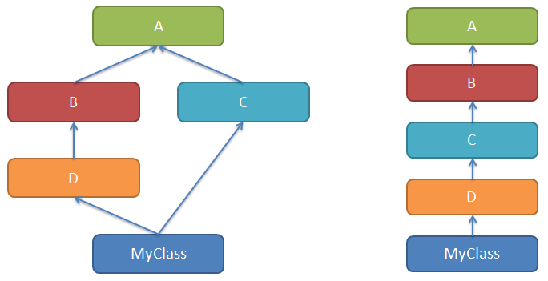
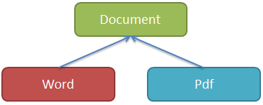
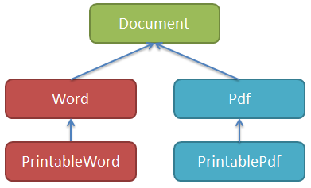

面向对象-继承和Mixin
类的继承
基本概念
面向对象三要素之一，继承Inheritance
人类和猫类都继承自动物类。
个体继承自父母，继承了父母的一部分特征，但也可以有自己的个性。
在面向对象的世界中，从父类继承，就可以直接拥有父类的属性和方法，这样可以减少代码冗余、多复用。子类也可以定义自己的属性和方法。
看一个不用继承的例子
1 | class Animal: |
上面的2个类虽然有关系，但是定义时并没有建立这种关系，而是各自完成定义。动物类和猫类都会叫，但是它们的叫法有区别，所以分别定义
1 | class Animal: |
上例可以看出，通过继承，猫类、狗类不用写代码，直接继承了父类的属性和方法。
继承
class Cat(Animal) 这种形式就是从父类继承，括号中写上继承的类的列表。
继承可以让子类从父类获取特征（属性和方法）
父类
Animal就是Cat的父类，也称为基类、超类
子类
Cat就是Animal的子类，也称为派生类
定义
格式如下
1 | class 子类名(基类1[,基类2,...]): |
如果类定义时，没有基类列表，等同于继承自object。在Python3中，object类是所有对象的根基类。
1 | class A: |
注意，上例在Python2中，两种写法是不同的。
Python支持多继承，继承也可以多级。
查看继承的特殊属性和方法有
| 特殊属性和方法 | 含义 |
|---|---|
| __bases__ | 类的基类元组 |
| __base__ | 类的基类元组的第一项 |
| __mro__ | 显示方法查找顺序，基类的元组 |
| mro() | 方法 同上，返回列表 |
| __subclasses__() | 类的子类列表 |
1 | class A: |
1 | <class 'object'> |
Python不同版本的类
Python2.2之前类是没有共同的祖先的，之后，引入object类，它是所有类的共同祖先类object。
Python2中为了兼容，分为古典类（旧式类）和新式类。
Python3中全部都是新式类。
新式类都是继承自object的，新式类可以使用super
1 | # 以下代码在Python2.x中运行 |
1 | ['__class__', '__delattr__', '__dict__', '__dir__', '__doc__', '__eq__', '__format__', '__ge__', '__getattribute__', '__gt__', '__hash__', '__init__', '__init_subclass__', '__le__', '__lt__', '__module__', '__ne__', '__new__', '__reduce__', '__reduce_ex__', '__repr__', '__setattr__', '__sizeof__', '__str__', '__subclasshook__', '__weakref__'] |
继承中的访问控制
1 | class Animal: |
1 | 11 |
从父类继承，自己没有的，就可以到父类中找。
私有的都是不可以访问的，但是本质上依然是改了名称放在这个属性所在类或实例的__dict__中。知道这个新名称就可以直接找到这个隐藏的变量，这是个黑魔法技巧，慎用
总结
继承时，公有成员，子类和实例都可以随意访问；私有成员被隐藏，子类和实例不可直接访问，但私有变量所在的类内的方法中可以访问这个私有变量。
Python通过自己一套实现，实现和其它语言一样的面向对象的继承机制。
实例属性查找顺序
实例的__dict__ → 类__dict__ →如果有继承→ 父类 dict
如果搜索这些地方后没有找到就会抛异常，先找到就立即返回了
方法的重写、覆盖override
1 | class Animal: |
Cat中能否覆盖自己的方法吗？
Cat中能否对父类方法做个增强，不需要完全重写？
1 |
|
1 | miao |
super()可以访问到父类的类属性。
静态方法和类方法，是特殊的方法，也是类属性，所以访问方式一样。
继承时使用初始化
1 | class A: |
运行结果
1 | 5 6 |
总结
如果在子类中覆盖了父类的__init__方法，那么在子类的__init__方法中，应该显式调用父类的__init__方法
Python中并不限制在子类的__init__方法中调用父类的__init__方法的位置，但一般都应该尽早的调用
推荐使用 super().init() 或 super(B, self).init()
单继承
上面的例子中，类的继承列表中只有一个类，这种继承称为单一继承。
OCP原则：多用“继承”、少修改。对扩展开放，对修改封闭。
继承的用途：在子类上实现对基类的增强，实现多态
多态
在面向对象中，父类、子类通过继承联系在一起，如果可以通过一套方法，就可以实现不同表现，就是多态。多态的前提：继承、覆盖
多继承弊端
多继承很好的模拟了世界，因为事物很少是单一继承，但是舍弃简单，必然引入复杂性，带来了冲突。
如同一个孩子继承了来自父母双方的特征。那么到底眼睛像爸爸还是妈妈呢？孩子究竟该像谁多一点呢？
多继承的实现会导致编译器设计的复杂度增加，所以有些高级编程语言舍弃了类的多继承
C++支持多继承；Java舍弃了多继承。
Java中，一个类可以实现多个接口，一个接口也可以继承多个接口。Java的接口很纯粹，只是方法的声明，继承者必须实现这些方法，就具有了这些能力，就能干什么。
多继承可能会带来二义性，例如，猫和狗都继承自动物类，现在如果一个类多继承了猫和狗类，猫和狗都有shout方法，子类究竟继承谁的shout呢？
解决方案
实现多继承的语言，要解决二义性，深度优先或者广度优先。
Python多继承实现
1 | class ClassName(基类1, 基类2[, ...]): |

左图是多继承（菱形继承），右图是单一继承
多继承带来路径选择问题，究竟继承哪个父类的特征呢
Python使用MRO（method resolution order方法解析顺序）解决基类搜索顺序问题。
- 历史原因，MRO有三个搜索算法：
- 经典算法，按照定义从左到右，深度优先策略。2.2版本之前
- 左图的MRO是MyClass,D,B,A,C,A
- 新式类算法，是经典算法的升级，深度优先，重复的只保留最后一个。2.2版本左图的MRO是MyClass,D,B,C,A,object
- C3算法，在类被创建出来的时候，就计算出一个MRO有序列表。2.3之后支持，Python3唯一支持的算法
- 左图中的MRO是MyClass,D,B,C,A,object的列表
- C3算法解决多继承的二义性
经典算法有很大的问题，如果C中有方法覆盖了A的方法，也不会访问到C的方法，因为先访问A的（深度优先）
新式类算法，依然采用了深度优先，解决了重复问题，但是同经典算法一样，没有解决继承的单调性
C3算法，解决了继承的单调性，它阻止创建之前版本产生二义性的代码。求得的MRO本质是为了线性化，且确定了顺序。
单调性：假设有A、B、C三个类，C的mro是[C, A, B]，那么C的子类的mro中，A、B的顺序一致就是单调的
多继承的缺点
当类很多且继承复杂的情况下，继承路径太多，很难说清什么样的继承路径。
Python语法是允许多继承，但Python代码是解释执行，只有执行到的时候，才发现错误。
团队协作开发，如果引入多继承，那代码很有可能不可控。
不管编程语言是否支持多继承，都应当避免多继承。
Python的面向对象，我们看到的太灵活了，太开放了，所以要团队守规矩。
Mixin
在Python的很多类的实现中，都可以看到一个Mixin的名字，这种类是什么呢？
类有下面的继承关系

文档Document类是其他所有文档类的抽象基类；
Word、Pdf类是Document的子类。
需求：为Document子类提供打印能力
思路：
1、在Document中提供print方法
假设已经有了下面3个类
1 | class Document: |
基类提供的方法可以不具体实现，因为它未必适合子类的打印，子类中需要覆盖重写。
基类中只定义，不实现的方法，称为“抽象方法”。在Python中，如果采用这种方式定义的抽象方法，子类可以不实现，直到子类使用该方法的时候才报错。
print算是一种能力 —— 打印功能，不是所有的Document的子类都需要的，所有，从这个角度出发，
上面的基类Document设计有点问题。
2、需要打印的子类上增加
如果在现有子类Word或Pdf上直接增加，虽然可以，却违反了OCP的原则，所以可以继承后增加打印功能。因此有下图

1 | class Document: # 第三方库，不允许修改 |
看似不错，如果需要还要提供其他能力，如何继承？
例如，如果该类用于网络，还应具备序列化的能力，在类上就应该实现序列化。
可序列化还可能分为使用pickle、json、messagepack等。
这个时候发现，为了增加一种能力，就要增加一次继承，类可能太多了，继承的方式不是很好了。
功能太多，A类需要某几样功能，B类需要另几样功能，它们需要的是多个功能的自由组合，继承实现很繁琐。
3、Mixin
先看代码
1 | class Document: # 第三方库，不允许修改 |
Mixin就是其它类混合进来，同时带来了类的属性和方法。
Mixin类
Mixin本质上就是多继承实现的。
Mixin体现的是一种组合的设计模式。
在面向对象的设计中，一个复杂的类，往往需要很多功能，而这些功能由来自不同的类提供，这就需要很多的类组合在一起。
从设计模式的角度来说，多组合，少继承。
Mixin类的使用原则
- Mixin类中不应该显式的出现__init__初始化方法
- Mixin类仅实现单一功能，通常不能独立工作，因为它是准备混入别的类中的部分功能实现
- Mixin类是类，也可以继承，其祖先类也应是Mixin类
使用时，Mixin类通常在继承列表的第一个位置，例如 class PrintableWord(PrintableMixin,Word): pass
Mixin类和装饰器，都可以实现对类的增强，这两种方式都可以使用，看个人喜好。
如果还需要继承就得使用Mixin类的方式
 微信
微信 支付宝
支付宝